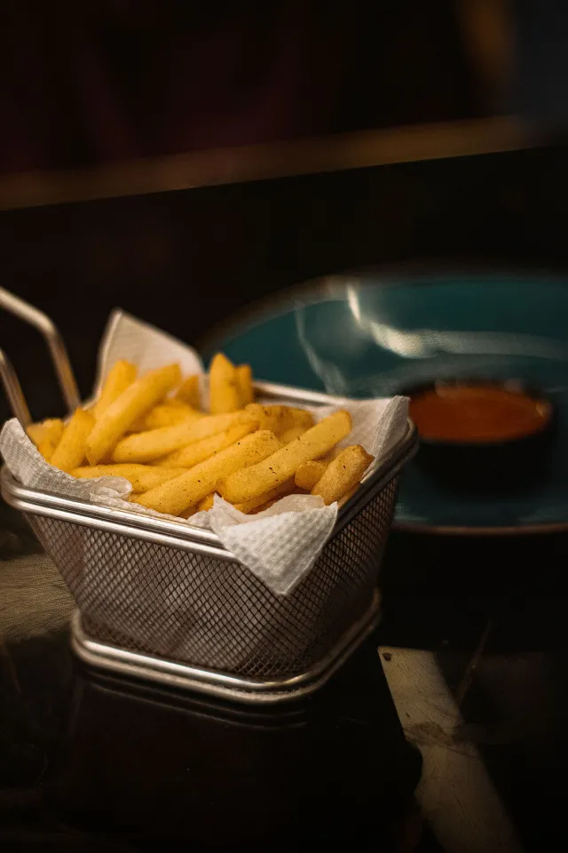
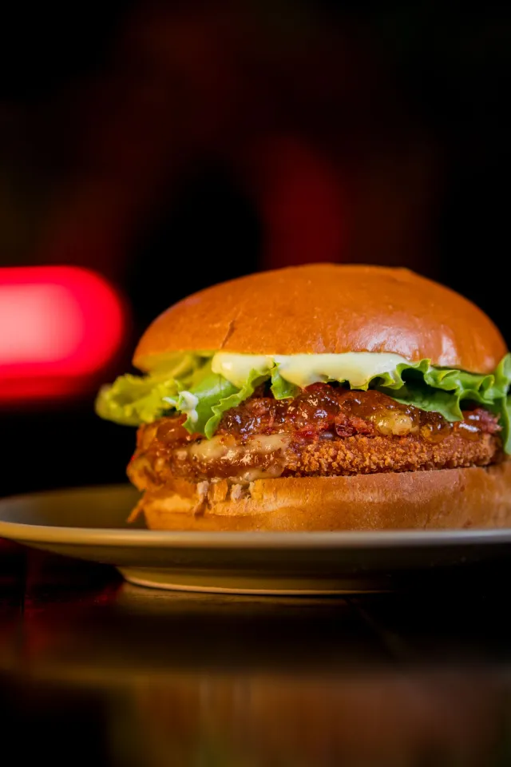
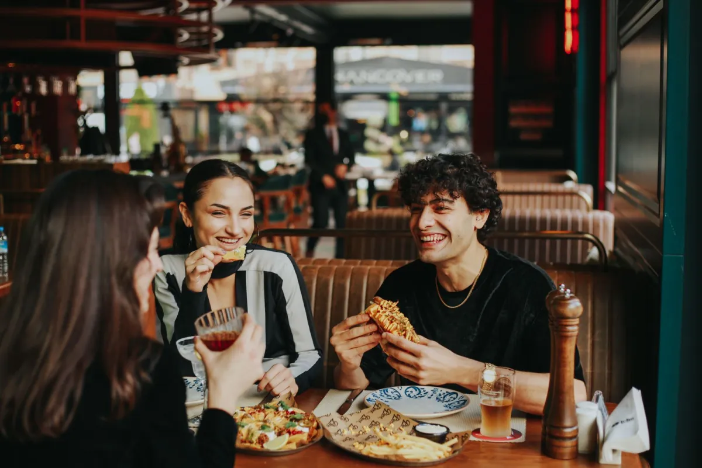

Step 1

Fresh potatoes
We choose our potatoes carefully and cut them here. Never a bag from the freezer.
Our story
Fresh fries, honest meat and a place in Den Bosch where you simply walk in.
"Quality and affordability are the golden words for us."The owner of Friethuys Kwibus


Friethuys Kwibus started with a simple idea: combine the quality and comfort you expect from a restaurant with the easygoing feel of the cafeteria around the corner. No white napkins, but freshly cut fries, burgers of 100% beef and soft serve we churn ourselves.
That is why we call it cafetaria 2.0. You walk in like you would at any chip shop, but what you take home is made with that bit of extra care.

Also as a chicken burger, with halal chicken fillet from the grill.
We choose our potatoes carefully and cut them here. Never a bag from the freezer.

We fry in plant-based oil that is gluten-free, so almost everyone can join in.

Our burgers are made of 100% Dutch beef and all chicken on the menu is halal.

From a kids cone to a milkshake in five flavours, churned from a full-cream mix.



We are on the Onderwijsboulevard, between the schools and the neighbourhood. Inside it is warm and homely: wooden tables, soft lamps and plenty of room to sit down. Students drop in between classes, families pick up a family bag on Saturday evening.
"A spotlessly clean place and the staff are very friendly. The food is really delicious and the prices are lower than you are used to."
We always get our fries here and won’t be going anywhere else any time soon. The fries they serve are among the best I’ve ever had.
The best fries in Den Bosch. Golden and crisp, exactly how fries should be.
Great food and good service. A nice place to sit down together for a while.
The best beef stew sauce and the tastiest spicy bami in the neighbourhood. And it is always ready right on time.
Onderwijsboulevard 416, 's-Hertogenbosch · feel free to walk in